2. РЕЗОНАНС НАПРЯЖЕНИЙ
Резонанс напряжений (РН) возникает в последовательном колебательном контуре (рис. 8.1). В схему замещения цепи включен также элемент R, учитывающий все виды активных потерь в контуре (в катушке, конденсаторе, во внутреннем сопротивлении источника питания, в соединительных проводах).
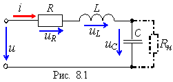
Условием наступления РН в схеме рис. 8.1 является равенство нулю реактивного сопротивления на входе цепи:
ХРН = ХL(РН) - ХC(РН) = 0
или ωРНL = 1/(ωРН C),
откуда угловая (в рад/с) и циклическая (в Гц) резонансные частоты контура
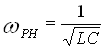 и 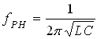.
Характеристическое (волновое) сопротивление ρ (в Ом) последовательного колебательного контура равно его индуктивному или ёмкостному сопротивлению при резонансе:
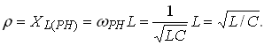
Добротность Q контура – это отношение характеристического сопротивления ρ контура к резистивному R при резонансе: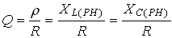
Чем больше ρ и меньше R, тем добротнее контур, тем будут ýже частотные характеристики тока и напряжений на элементах контура. В радиотехнических контурах добротность Q = 100…1000; в электрических цепях добротность обычно не превышает 3…5.
Добротность показывает, во сколько раз напряжение на зажимах конденсатора UC = UL при резонансе большие напряжения питания контура U: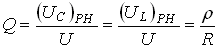
Ток I при РН имеет максимальное значение,
.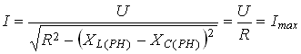
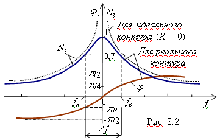
Зависимость нормированного тока Ni(f) = I(f)/Imax и фазового угла φ от частоты f напряжения на входе контура представлены на рис. 8.2.
Характерной особенностью режима РН является превышение напряжений UL и UC входного напряжения U контура, первопричиной которого является ЭДС самоиндукции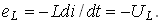
Векторные диаграммы напряжений на элементах контура до режима резонанса (а), при режиме резонанса (б) и после режима РН (в) представлен на рис. 8.3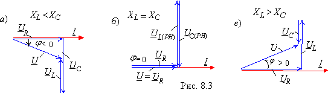
Важнейшей характеристикой контура является его полоса пропускания (рис.8.2, а):
Δf = fв - fн или Δω = ωв - ωн,
под которой понимают диапазон частот, в пределах которого значение нормированного тока Ni(f) = I(f)/Imax равно или больше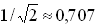 . На границах полосы пропускания, т. е. на частотах fв и fн (ωв и ωн), называемых верхней и нижней частотами среза, нормированный ток 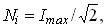 активная мощность P = 0,5Pmax, а угол φ = ± 45°.
Приближённо полосу пропускания контура определяют по формуле
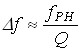или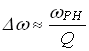 .
Заметим, что чем больше добротность, тем ýже полоса пропускания сигнала (рис. 8.4).
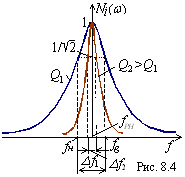
На практике параллельно конденсатору подключают приёмник, сопротивление которого порядка Rн = 10…100 кОм.
При небольших значениях Rн полоса пропускания Δf увеличивается, а добротность контура снижается и равна
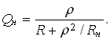